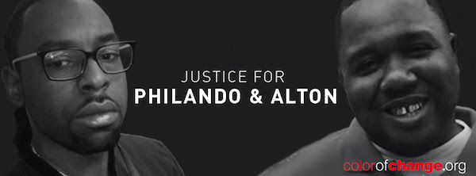

This project is maintained by
Vote for Me Jalah Perry.

It’s tough out there for a voter—candidates from both parties have a lot to say about countless topics. So we asked our readers what matters most to them and got the answers straight from the presidential hopefuls themselves.
Change Ahead
This past week, we all bore witness to the brutal murders of FOUR Black men by police—Alton Sterling, Philando Castile, Delrawn Smalls, and Alva Braziel.1 And guess what? The federal government has been bankrolling the police departments that killed all four of them. Yes. Congress and the Obama administration are spending millions of dollars every year giving grants to the same police departments that are killing and over-incarcerating Black people--and it has to stop. If you vote for me I'll stop all of this.
Authors and Contributors

Support or Contact

Having trouble with Pages? Check out our documentation or contact support and we’ll help you sort it out.